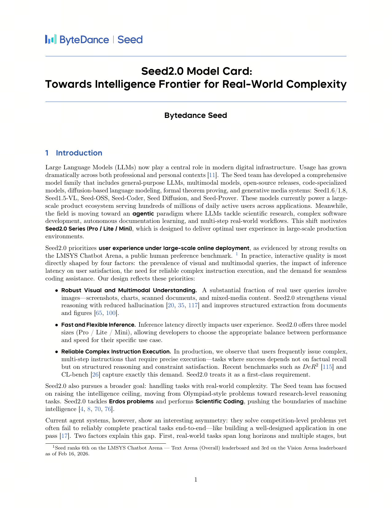

问题与背景
Agent Foundation Model vs General Foundation Model
| 维度 | General Foundation Model | Agent Foundation Model |
|---|---|---|
| 训练目标 | 对话、问答、摘要 | 工具使用、多步推理、环境交互 |
| 预训练数据 | 网页、书籍、代码 | Agent 轨迹、环境反馈 |
| 评测重点 | MMLU, HumanEval | GAIA, SWE-bench, GUI tasks |
| 下游适配 | SFT/RM/RLHF | 更少微调即可做 agent |
研究动机
Seed2.0 定位为 Agent 场景的基础模型（类似 LLM 作为对话基础模型）。核心设计强调 "Agent-first"，不仅具备基础能力，还在预训练阶段就针对 agentic 场景进行优化，为下游 agent 任务提供更强的 base。
核心方法
Agent2.0 核心能力
- Computer Use
操作系统操作能力 - Software Engineering
代码编写和调试 - Research
信息检索和综合 - Multimodal Agent
视觉理解和操作
设计理念
"Agent-first" 理念：在预训练阶段就针对 agentic 场景进行优化，而非仅在 post-training 阶段做 RLHF/SFT。这可能比 post-training 更高效。

Seed2.0 Model Card — Agent Foundation Model from ByteDance
实验结果与启发
核心洞察
- Agent Foundation Model 概念对 GUI Agent 研究有启示——需要专门针对 agentic 场景优化的 base model
- 预训练阶段就考虑 agentic 能力，可能比 post-training 更高效
- 期待看到 Seed2.0 的完整技术报告，了解其预训练 recipe
关键数据点
| 能力维度 | 评测基准 |
|---|---|
| Computer Use | OS 操作任务 |
| Software Engineering | SWE-bench |
| Research | GAIA |
| Multimodal Agent | GUI tasks |